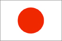
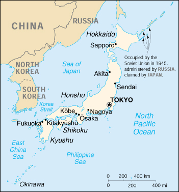

{kind=link}


| Japan |  |
|
|  | |
| Introduction |
Background: While retaining its time-honored culture, Japan rapidly absorbed Western technology during the late 19th and early 20th centuries. After its devastating defeat in World War II, Japan recovered to become the second most powerful economy in the world and a staunch ally of the US. While the emperor retains his throne as a symbol of national unity, actual power rests in networks of powerful politicians, bureaucrats, and business executives. The economy experienced a major slowdown in the 1990s following three decades of unprecedented growth.
| Geography |
Location: Eastern Asia, island chain between the North Pacific Ocean and the Sea of Japan, east of the Korean Peninsula
Geographic coordinates: 36 00 N, 138 00 E
Map references: Asia
Area:
total:
377,835 sq km
land:
374,744 sq km
water:
3,091 sq km
note:
includes Bonin Islands (Ogasawara-gunto), Daito-shoto, Minami-jima, Okino-tori-shima, Ryukyu Islands (Nansei-shoto), and Volcano Islands (Kazan-retto)
Area - comparative: slightly smaller than California
Land boundaries: 0 km
Coastline: 29,751 km
Maritime claims:
exclusive economic zone:
200 nm
territorial sea:
12 nm; between 3 nm and 12 nm in the international straits - La Perouse or Soya, Tsugaru, Osumi, and Eastern and Western Channels of the Korea or Tsushima Strait
Climate: varies from tropical in south to cool temperate in north
Terrain: mostly rugged and mountainous
Elevation extremes:
lowest point:
Hachiro-gata -4 m
highest point:
Fujiyama 3,776 m
Natural resources: negligible mineral resources, fish
Land use:
arable land:
11%
permanent crops:
1%
permanent pastures:
2%
forests and woodland:
67%
other:
19% (1993 est.)
Irrigated land: 27,820 sq km (1993 est.)
Natural hazards: many dormant and some active volcanoes; about 1,500 seismic occurrences (mostly tremors) every year; tsunamis
Environment - current issues: air pollution from power plant emissions results in acid rain; acidification of lakes and reservoirs degrading water quality and threatening aquatic life; Japan is one of the largest consumers of fish and tropical timber, contributing to the depletion of these resources in Asia and elsewhere
Environment - international agreements:
party to:
Antarctic-Environmental Protocol, Antarctic Treaty, Biodiversity, Climate Change, Desertification, Endangered Species, Environmental Modification, Hazardous Wastes, Law of the Sea, Marine Dumping, Nuclear Test Ban, Ozone Layer Protection, Ship Pollution, Tropical Timber 83, Tropical Timber 94, Wetlands, Whaling
signed, but not ratified:
Climate Change-Kyoto Protocol
Geography - note: strategic location in northeast Asia
| People |
Population: 126,549,976 (July 2000 est.)
Age structure:
0-14 years:
15% (male 9,575,637; female 9,105,713)
15-64 years:
68% (male 43,363,054; female 42,980,253)
65 years and over:
17% (male 9,024,015; female 12,501,304) (2000 est.)
Population growth rate: 0.18% (2000 est.)
Birth rate: 9.96 births/1,000 population (2000 est.)
Death rate: 8.15 deaths/1,000 population (2000 est.)
Net migration rate: 0 migrant(s)/1,000 population (2000 est.)
Sex ratio:
at birth:
1.05 male(s)/female
under 15 years:
1.05 male(s)/female
15-64 years:
1.01 male(s)/female
65 years and over:
0.72 male(s)/female
total population:
0.96 male(s)/female (2000 est.)
Infant mortality rate: 3.91 deaths/1,000 live births (2000 est.)
Life expectancy at birth:
total population:
80.7 years
male:
77.51 years
female:
84.05 years (2000 est.)
Total fertility rate: 1.41 children born/woman (2000 est.)
Nationality:
noun:
Japanese (singular and plural)
adjective:
Japanese
Ethnic groups: Japanese 99.4%, other 0.6% (mostly Korean)
Religions: observe both Shinto and Buddhist 84%, other 16% (including Christian 0.7%)
Languages: Japanese
Literacy:
definition:
age 15 and over can read and write
total population:
99% (1970 est.)
male:
NA%
female:
NA%
| Government |
Country name:
conventional long form:
none
conventional short form:
Japan
Data code: JA
Government type: constitutional monarchy
Capital: Tokyo
Administrative divisions: 47 prefectures; Aichi, Akita, Aomori, Chiba, Ehime, Fukui, Fukuoka, Fukushima, Gifu, Gumma, Hiroshima, Hokkaido, Hyogo, Ibaraki, Ishikawa, Iwate, Kagawa, Kagoshima, Kanagawa, Kochi, Kumamoto, Kyoto, Mie, Miyagi, Miyazaki, Nagano, Nagasaki, Nara, Niigata, Oita, Okayama, Okinawa, Osaka, Saga, Saitama, Shiga, Shimane, Shizuoka, Tochigi, Tokushima, Tokyo, Tottori, Toyama, Wakayama, Yamagata, Yamaguchi, Yamanashi
Independence: 660 BC (traditional founding by Emperor Jimmu)
National holiday: Birthday of the Emperor, 23 December (1933)
Constitution: 3 May 1947
Legal system: modeled after European civil law system with English-American influence; judicial review of legislative acts in the Supreme Court; accepts compulsory ICJ jurisdiction, with reservations
Suffrage: 20 years of age; universal
Executive branch:
chief of state:
Emperor AKIHITO (since 7 January 1989)
head of government:
Prime Minister Yoshiro MORI (since 5 April 2000)
cabinet:
Cabinet appointed by the prime minister
elections:
none; the monarch is hereditary; the Diet designates the prime minister; the constitution requires that the prime minister must command a parliamentary majority, therefore, following legislative elections, the leader of the majority party or leader of a majority coalition in the House of Representatives usually becomes prime minister
note:
on 3 April 2000, Prime Minister Keizo OBUCHI suffered a stroke and was relieved of his duties; Chief Cabinet Secretary Mikio AOKI became acting prime minister; on 5 April 2000, Yoshiro MORI was elected prime minister by a vote in both houses of the Diet, receiving 137 out of 244 votes cast in the House of Councillors ans 335 out of 488 votes cast in the House of Representatives
Legislative branch:
bicameral Diet or Kokkai consists of the House of Councillors or Sangi-in (252 seats; one-half of the members elected every three years - 76 seats of which are elected from the 47 multi-seat prefectural districts and 50 of which are elected from a single nationwide list with voters casting ballots by party; members elected by popular vote to serve six-year terms) and the House of Representatives or Shugi-in (500 seats - 200 of which are elected from 11 regional blocks on a proportional representation basis and 300 of which are elected from 300 single-seat districts; members elected by popular vote to serve four-year terms)
elections:
House of Councillors - last held 12 July 1998 (next to be held NA July 2001); House of Representatives - last held 20 October 1996 (next to be held by October 2000)
election results:
House of Councillors - percent of vote by party - NA; seats by party - LDP 102, DPJ 47, JCP 23, Komeito 22, SDP 13, Liberal Party 12, independents 26, others 7; note - the distribution of seats as of December 1999 is as follows - LDP 105, DPJ 57, Komeito 24, JCP 23, SDP 13, Liberal Party 12, independents 6, others 12; House of Representatives - percent of vote by party - NA; seats by party - LDP 240, NFP 142, DPJ 52, JCP 26, SDP 15, Sun Party 10, others 15; note - the distribution of seats as of December 1999 is as follows - LDP 267, DPJ 93, Komeito/Reform Club 48, Liberal Party 39, JCP 26, SDP 14, independents 9, others 4
Judicial branch: Supreme Court, chief justice is appointed by the monarch after designation by the cabinet, all other justices are appointed by the cabinet
Political parties and leaders:
Democratic Party of Japan or DPJ [Yukio HATOYAMA, leader, Tsutomu HATA, secretary general]; Japan Communist Party or JCP [Tetsuzo FUWA, chairman, Kazuo SHII, secretary general]; Komeito [Takenori KANZAKI, president, Tetsuzo FUYUSHIBA, secretary general]; Liberal Democratic Party or LDP [Yoshiro MORI, president, Hiromu NONAKA, secretary general]; Liberal Party [Ichiro OZAWA, president, Hirohisa FUJII, secretary general]; Reform Club [Tatsuo OZAWA, leader, Katsuyuki ISHIDA, secretary general]; Social Democratic Party or SDP [Takako DOI, chairperson, Sadao FUCHIGAMI, secretary general]
note:
subsequent to the last legislative elections, the New Frontier Party or NFP and the Sun Party disbanded; in late 1997, the LP was formed by former NFP members; the DPJ was formed by former members of the SDP and Sakigake and, in April 1998, was joined by three additional parties which had formed after the NFP disbanded; New Peace Party and Komei merged to form Komeito in November 1998
International organization participation: AfDB, APEC, AsDB, Australia Group, BIS, CCC, CE (observer), CERN (observer), CP, EBRD, ESCAP, FAO, G- 5, G- 7, G-10, IADB, IAEA, IBRD, ICAO, ICC, ICFTU, ICRM, IDA, IEA, IFAD, IFC, IFRCS, IHO, ILO, IMF, IMO, Inmarsat, Intelsat, Interpol, IOC, IOM, ISO, ITU, NAM (guest), NEA, NSG, OAS (observer), OECD, OPCW, OSCE (partner), PCA, UN, UNCTAD, UNDOF, UNESCO, UNHCR, UNIDO, UNITAR, UNRWA, UNU, UPU, WFTU, WHO, WIPO, WMO, WToO, WTrO, ZC
Diplomatic representation in the US:
chief of mission:
Ambassador Shunji YANAI
chancery:
2520 Massachusetts Avenue NW, Washington, DC 20008
telephone:
[1] (202) 238-6700
FAX:
[1] (202) 328-2187
consulate(s) general:
Hagatna (Guam), Anchorage, Atlanta, Boston, Chicago, Denver, Detroit, Honolulu, Houston, Kansas City (Missouri), Los Angeles, Miami, New Orleans, New York, Portland (Oregon), San Francisco, and Seattle
consulate(s):
Saipan (Northern Mariana Islands)
Diplomatic representation from the US:
chief of mission:
Ambassador Thomas S. FOLEY
embassy:
10-5, Akasaka 1-chome, Minato-ku, Tokyo 107-8420
mailing address:
Unit 45004, Box 205, APO AP 96337-5004
telephone:
[81] (3) 3224-5000
FAX:
[81] (3) 3224-5856
consulate(s) general:
Naha (Okinawa), Osaka-Kobe, Sapporo
consulate(s):
Fukuoka, Nagoya
Flag description: white with a large red disk (representing the sun without rays) in the center
| Economy |
Economy - overview: Government-industry cooperation, a strong work ethic, mastery of high technology, and a comparatively small defense allocation (1% of GDP) have helped Japan advance with extraordinary rapidity to the rank of second most technologically powerful economy in the world after the US and third largest economy in the world after the US and China. One notable characteristic of the economy is the working together of manufacturers, suppliers, and distributors in closely knit groups called keiretsu. A second basic feature has been the guarantee of lifetime employment for a substantial portion of the urban labor force. Both features are now eroding. Industry, the most important sector of the economy, is heavily dependent on imported raw materials and fuels. The much smaller agricultural sector is highly subsidized and protected, with crop yields among the highest in the world. Usually self-sufficient in rice, Japan must import about 50% of its requirements of other grain and fodder crops. Japan maintains one of the world's largest fishing fleets and accounts for nearly 15% of the global catch. For three decades overall real economic growth had been spectacular: a 10% average in the 1960s, a 5% average in the 1970s, and a 4% average in the 1980s. Growth slowed markedly in 1992-95 largely because of the aftereffects of overinvestment during the late 1980s and contractionary domestic policies intended to wring speculative excesses from the stock and real estate markets. Growth picked up to 3.9% in 1996, largely a reflection of stimulative fiscal and monetary policies as well as low rates of inflation. But in 1997-98 Japan experienced a wrenching recession, centered about financial difficulties in the banking system and real estate markets and exacerbated by rigidities in corporate structures and labor markets. In 1999 output started to stabilize as emergency government spending began to take hold and business confidence gradually improved. The crowding of habitable land area and the aging of the population are two major long-run problems. Robotics constitutes a key long-term economic strength, with Japan possessing 410,000 of the world's 720,000 "working robots".
GDP: purchasing power parity - $2.95 trillion (1999 est.)
GDP - real growth rate: 0.3% (1999 est.)
GDP - per capita: purchasing power parity - $23,400 (1999 est.)
GDP - composition by sector:
agriculture:
2%
industry:
35%
services:
63% (1999 est.)
Population below poverty line: NA%
Household income or consumption by percentage share:
lowest 10%:
NA%
highest 10%:
NA%
Inflation rate (consumer prices): -0.8% (1999 est.)
Labor force: 67.76 million (November 1999)
Labor force - by occupation: trade and services 65%, industry 30%, agriculture, forestry, and fishing 5%
Unemployment rate: 4.7% (1999 est.)
Budget:
revenues:
$463 billion
expenditures:
$809 billion, including capital expenditures (public works only) of about $94 billion (FY00/01 est.)
Industries: among world's largest and technologically advanced producers of motor vehicles, electronic equipment, machine tools, steel and nonferrous metals, ships, chemicals; textiles, processed foods
Industrial production growth rate: -0.1% (1999 est.)
Electricity - production: 995.982 billion kWh (1998)
Electricity - production by source:
fossil fuel:
56.68%
hydro:
8.99%
nuclear:
31.93%
other:
2.4% (1998)
Electricity - consumption: 926.263 billion kWh (1998)
Electricity - exports: 0 kWh (1998)
Electricity - imports: 0 kWh (1998)
Agriculture - products: rice, sugar beets, vegetables, fruit; pork, poultry, dairy products, eggs; fish
Exports: $413 billion (f.o.b., 1999 est.)
Exports - commodities: motor vehicles, semiconductors, office machinery, chemicals
Exports - partners: US 31%, Taiwan 7%, China 5.5%, South Korea 5.4%, Hong Kong 5.2% (1999)
Imports: $306 billion (c.i.f., 1999 est.)
Imports - commodities: fuels, foodstuffs, chemicals, textiles, office machinery
Imports - partners: US 22%, China 14%, South Korea 5.1%, Australia 4.2%, Taiwan 4.1% (1999)
Debt - external: $NA
Economic aid - donor: ODA, $9.1 billion (1999)
Currency: yen
Exchange rates: yen per US$1 - 105.16 (January 2000), 113.91 (1999), 130.91 (1998), 120.99 (1997), 108.78 (1996), 94.06 (1995)
Fiscal year: 1 April - 31 March
| Communications |
Telephones - main lines in use: 60.3 million (1997)
Telephones - mobile cellular: 36.5 million (1998)
Telephone system:
excellent domestic and international service
domestic:
NA
international:
satellite earth stations - 5 Intelsat (4 Pacific Ocean and 1 Indian Ocean), 1 Intersputnik (Indian Ocean region), and 1 Inmarsat (Pacific and Indian Ocean regions); submarine cables to China, Philippines, Russia, and US (via Guam)
Radio broadcast stations: AM 190, FM 88, shortwave 24 (1999)
Radios: 120.5 million (1997)
Television broadcast stations: 7,108 (plus 441 repeaters; note - in addition, US Forces are served by 3 TV stations and 2 TV cable services) (1999)
Televisions: 86.5 million (1997)
Internet Service Providers (ISPs): 357 (1999)
| Transportation |
Railways:
total:
23,670.7 km
standard gauge:
2,893.1 km 1.435-m gauge (entirely electrified)
narrow gauge:
89.8 km 1.372-m gauge (89.8 km electrified); 20,656.8 km 1.067-m gauge (10,383.6 km electrified); 31 km 0.762-m gauge (3.6 km electrified) (1994)
Highways:
total:
1,152,207 km
paved:
863,003 km (including 6,114 km of expressways)
unpaved:
289,204 km (1997 est.)
Waterways: about 1,770 km; seagoing craft ply all coastal inland seas
Pipelines: crude oil 84 km; petroleum products 322 km; natural gas 1,800 km
Ports and harbors: Akita, Amagasaki, Chiba, Hachinohe, Hakodate, Higashi-Harima, Himeji, Hiroshima, Kawasaki, Kinuura, Kobe, Kushiro, Mizushima, Moji, Nagoya, Osaka, Sakai, Sakaide, Shimizu, Tokyo, Tomakomai
Merchant marine:
total:
662 ships (1,000 GRT or over) totaling 13,039,488 GRT/18,024,969 DWT
ships by type:
bulk 146, cargo 49, chemical tanker 13, combination bulk 16, combination ore/oil 4, container 25, liquified gas 45, passenger 9, passenger/cargo 2, petroleum tanker 214, refrigerated cargo 22, roll-on/roll-off 48, short-sea passenger 9, vehicle carrier 60 (1999 est.)
Airports: 171 (1999 est.)
Airports - with paved runways:
total:
140
over 3,047 m:
6
2,438 to 3,047 m:
34
1,524 to 2,437 m:
41
914 to 1,523 m:
28
under 914 m:
31 (1999 est.)
Airports - with unpaved runways:
total:
31
1,524 to 2,437 m:
1
914 to 1,523 m:
2
under 914 m:
28 (1999 est.)
Heliports: 14 (1999 est.)
| Military |
Military branches: Japan Ground Self-Defense Force (Army), Japan Maritime Self-Defense Force (Navy), Japan Air Self-Defense Force (Air Force)
Military manpower - military age: 18 years of age
Military manpower - availability:
males age 15-49:
30,259,247 (2000 est.)
Military manpower - fit for military service:
males age 15-49:
26,139,516 (2000 est.)
Military manpower - reaching military age annually:
males:
771,452 (2000 est.)
Military expenditures - dollar figure: $42.9 billion (FY98/99)
Military expenditures - percent of GDP: 0.9% (FY98/99)
| Transnational Issues |
Disputes - international: islands of Etorofu, Kunashiri, Shikotan, and the Habomai group occupied by the Soviet Union in 1945, now administered by Russia, claimed by Japan; Liancourt Rocks (Takeshima/Tokdo) disputed with South Korea; Senkaku-shoto (Senkaku Islands) claimed by China and Taiwan